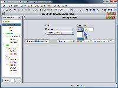
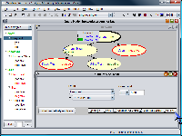
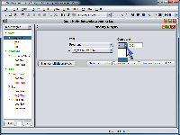
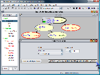

SamIam's Sensitivity Analysis is a powerful, user-friendly tool for analyzing the complex dependencies between variables in a Bayesian network and providing guidance to the belief engineer as he tweaks network parameter values. It suggests single and multiple parameter changes that satisfy a user-specified query constraint. The tool allows the user to define constraints in a natural, intuitive style that mimics the kinds of objectives he will formulate in the course of assessing query results. The power of the tool results from the fact that the kinds of parameter changes one can make in order to satisfy an intuitive constraint are rarely intuitive or obvious. Furthermore, the tool helps the user to make the smallest possible change to a parameter value that can satisfy the constraint.
Invoke the Sensitivity Analysis tool by selecting its menu item from the "Query" menu or by clicking the ">=" button in the tool bar. If you know the variable or variables on which you would like to specify the constraint, you can select them in the network view first, and the sensitivity tool will automatically choose the variables you select from the event drop-down boxes. The user defines the constraint he would like to satisfy in the upper part of the sensitivity window. Once he runs the sensitivity engine, the tool will display the parameter change suggestions in a table that occupies the lower part of the sensitivity window.
The sensitivity analysis tool allows the user to constrain the posterior probability of one or two events. The simplest form of a constraint is to ask that the posterior probability of a single event, one variable assuming a specified state, be above, equal to, or below a specified number. Under the label "Event," use the drop down boxes to select a variable from the network for which no evidence has been asserted, and a state of that variable. You will notice that the current posterior probabilities for each state will appear in the state-selection drop down box. To complete the constraint, choose a mathematical comparison operator from {<=, =, >=}, and enter a number in the text box.
To constrain the values of two posterior probabilities for the same variable, or two posterior probabilities for two different variables, check the "Constrain Two Events" checkbox. You will notice that the upper part of the sensitivity window changes to accommodate the definitions of two events. In this case, the user must select a mathematical operator defining the relation between the two events using the drop down box between the two event selection modules. The user can choose either "-" for the difference relation, or "/" for the ratio relation. Again, specify the two events using the event selection modules, and complete the constraint by selecting a mathemetical comparison and entering a number in the text box.
After completing the constraint, click the "Start sensitivity
analysis" button to start sensitivity analysis. For large networks, it may take
a few seconds for sensitivity analysis to run. After sensitivity analysis
completes, the tool will display a table of suggested changes that satisfy the
constraint, or will notify you that either the constraint is already satisfied,
or is unsatisfiable.
There are two types of suggested changes:
single parameter
and
multiple parameter (single CPT),
which display in separate tabs.
The single parameter suggestions table
consists of rows which represent each of the
suggested changes. It initially consists of three columns:
1. The "Parameter" column identifies each of the parameter values the tool suggests
changing.
2. The "Current value" column shows the current parameter value.
3. The "Suggested value" column displays the suggested interval that the paramter
value should be in.
You can display more detailed table information by selecting
the "Show table details" checkbox. Two extra columns will appear in the table.
4. The "Absolute change" column displays an interval that describes the
absolute change
from the current parameter value to the suggested new value. The
absolute change is defined as |q - p| if p is the current parameter value and
q is the new parameter value.
5. The "Log-odds change" column displays an interval that describes the
log-odds change
from the current parameter value to the suggested new value. The
log-odds change is defined as |ln (q / 1-q) - ln (p / 1-p)| if p is the current
parameter value and q is the new parameter value. We believe that the log-odds
change is a better representation of the amount of change than the absolute
change. For details of the log-odds change, refer to the paper
"When do Numbers Really Matter?"
by Chan and Darwiche in Proceedings of UAI-01.
The multiple parameter suggestions tab contains a list of network variables the CPTs for which the sensitivity tool suggests editing, along with the log-odds change for each suggestion. Clicking on a variable in the list displays the CPT for that variable on the right, with the suggested changes indicated in red.
The next step for the user is to inspect the list of suggestions and choose one he would like to test. The table itself provides some sorting functions that help the user find the best suggestion. To sort the suggestions alphabetically by parameter, click the column header for the "Parameter" column. Similarly, to sort the suggestions by the magnitude of the absolute change or log-odds change, click the appropriate column headers. These latter sorts may be especially useful for finding the suggestion that minimizes the parameter change in the network.
The Sensitivity Analysis tool provides two convenience functions to help the user make a parameter change, once he has decided on a suggestion to try out. First, select the row in the suggestion list corresponding to the suggestion you would like to follow. Now, clicking the "Edit" button will automatically display the conditional probability table that pertains to the suggestion. If you would like the tool to automatically change the CPT by the minimum amount necessary to satisfy your constraint, click the "Adopt Change" button. After adopting a change automatically, you will notice that the "Edit" and "Adopt Change" buttons become disabled, since changing more than one parameter would have the effect of upsetting the original constraint.
|
|
 |
|
|
 |